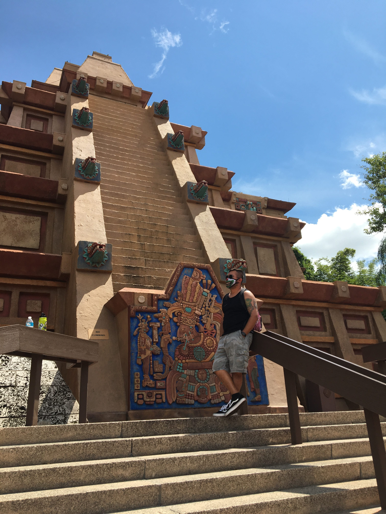

Hello my name is Daniel Burford, a recently engaged web development and software engineenering student. I am studying web developing and software engineering in UTSA's coding bootcamp. My background is predominantly in first responding I've been in the field for almost 10 years, With my training being focused in firefighting and EMS work. Up until starting the bootcamp I was for the most a self taught developer focusing my learning in HTML and CSS. With joining the bootcamp opened my eyes to more than just making a static website, but also intergrating JavaScript to add some functionality to that website as well.